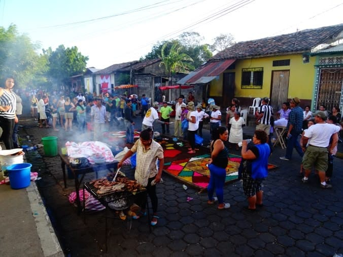
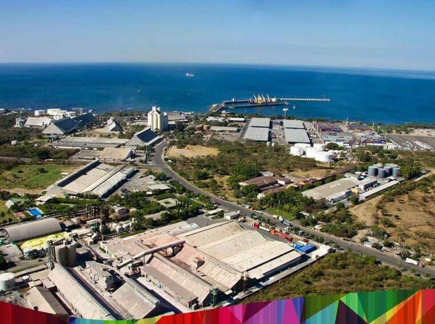
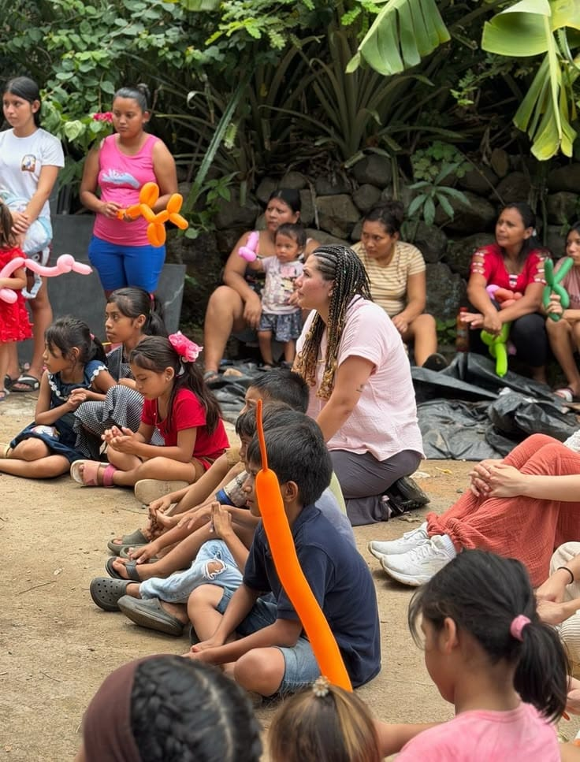

Education Investment
Modern Learning
Investing in curriculum reform, modern facilities, and digital literacy to empower future generations.


A journey through our community's growht, challenges, and progress.
Modern Learning
Investing in curriculum reform, modern facilities, and digital literacy to empower future generations.

Local Economy
Supporting small business, local crafts, and entrepreneurship in rural areas for inclusive growth.

Global Trade
Diversifying exports, attracting foreign direct investment, and building resilient infrastructure.

Community Building
Working towards equitable acces to healthcare, social services, and opportunities for all Salvadorans.